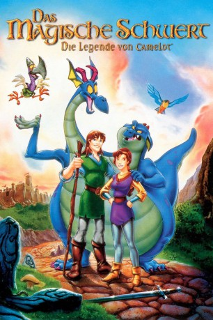

#4423 Das Magische Schwert - Die Legende von Camelot
Alternativ: The Magic Sword: Quest for Camelot (Englischer Titel)
Auszeichnungen: für 1 Oscars nominiert 1 GoldenGlobes gewonnen
 
 IMDB-Wertung: 6.2 / 10
IMDB-Wertung: 6.2 / 10  Metascore: 0
Metascore: 0 
Das furchtlose Mädchen Kayley folgt dem Ruf des großen Abenteuers, um Camelot vor dem Untergang zu bewahren. Gemeinsam mit dem jungen, blinden Einsiedler Garrett macht sie sich auf die Suche nach dem magischen Schwert Excalibur, das von dem bösen Lord Ruber geraubt wurde. Unterwegs begegnen die mutigen Helden dem urkomischen, doppelköpfigen Drachen Feuer & Flamme, der ewig mit sich selbst im Streit liegt. Und während der Zauberer Merlin seine schützende Hand über die ungleichen Gefährten hält, nimmt das Abenteuer seinen Lauf ...
Jahr: 1998
Dauer: 73 Minuten
FSK: 0
Land: Studio: Warner Bros.Tonspuren:
Untertitel:
Auflösung: 720p (1280x720) Größe: 2068 MB
Genre: Animation/Trick, Abenteuer, Komödie, Drama, Familie, Fantasy, Musical
Regisseur: Frederik Du Chau
Drehbuch: Samson Raphaelson
Soundtrack:
Darsteller:
Datei: X:\Kinder Filme (G-M)\Magische Schwert - Die Legende von Camelot, Das (1998, FSK0, 1280x720).mkv seit 15.09.2016
Festplatte: Kinder-Filme+Trick
 Es gibt insgesamt 84 Filme in der Gruppe 'Kinder Filme (G-M)'
Es gibt insgesamt 84 Filme in der Gruppe 'Kinder Filme (G-M)'